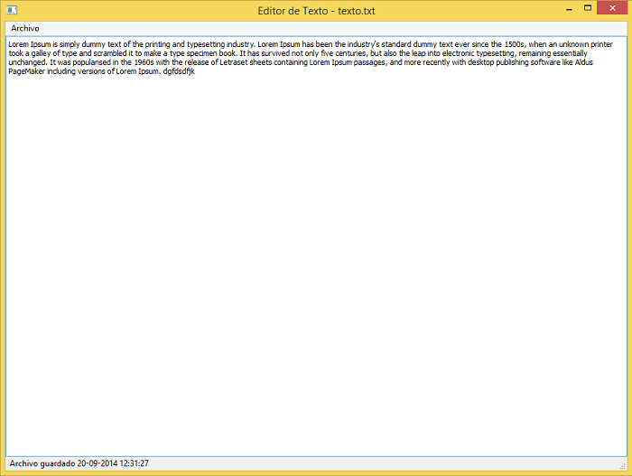

Aplicaciones e interfaces prácticas con PySide
PyDay Lujan 2014
¿Quién les habla?
- Leandro Poblet
- Programador en MSA.
- Pythonista desde los 16 años.
- Amante de Flask, Jinja y las buenas intenciones.
- Entusiasta de PySide (Motivo por el que doy esta charla hoy).
¿Cómo se va a encarar esta charla?
- Comprendiendo conceptos básicos de Python.
- Entendiendo las capacidades y funcionalidades de PySide.
- Con ejemplos...
- Ejemplos...
- Y si no entendieron, ¡Más ejemplos!
¿Qué es PySide?
Según la wiki oficial de PySide:
Qt es un framework multiplataforma para la creación de aplicaciones. Provee con una gran cantidad de librerias de servicios como abstracción de conexiones y manejo de XML, junto a una opulenta cantidad de prestaciones para la creación de interfaces, permitiendo a los desarrolladores de C++ escribir sus aplicaciones por única vez y correrlas sin modificar en distintos ambientes. PySide apunta a proveer a los desarrolladores de Python acceso a las funcionalidades de Qt de la manera más natural posible.** Para un usuario de Python.
¿Y PyQt? Similitudes y diferencias.
PyQt es una implementación de Qt para Python, la primera de hecho, la cual tuvo su mayor despliegue luego de que fuera adquirida por Nokia junto a Qt.
Similitudes
- PySide y PyQt tienen el mismo estílo de programación:
from PyQt4.QtGui import QtWidgetEn PySide sería:
from PySide.QtGui import QtWidgetLo cual nos permite utilizar casi cualquier código ejemplo de PyQt con PySide.
Diferencias
- PySide no soporta Qt5 actualmente.
- PySide implementa la versión 2 de la API de Qt. Funciones como QStrings, QStringList y QVariants no existen en PySide.
- Diferencias en la convención de nombres de ciertas funciones.*
* Lo cual veremos más adelante.
Estructura
PySide tiene una estructura bastante clara e intuitiva de sus funcionalidades.
Las que vamos a ver hoy son:
- QtCore: Todas las funcionalidades no gráficas de Qt.
- QtGui: Todas las funcionalidades gráficas de Qt.
- QtUiTools: Integración a Qt Creator.
- QtWebKit: Motor de navegador para integrar en la aplicación.
Primera aplicación
# -*- coding: utf-8 -*-
from __future__ import unicode_literals
import sys
from PySide import QtGui
app = QtGui.QApplication(sys.argv)
widget = QtGui.QWidget()
widget.resize(500, 150)
widget.setWindowTitle('Ejemplo de PySide')
widget.show()
sys.exit(app.exec_())Y voilá!
Aplicación básica con más color.
# -*- coding: utf-8 -*-
from __future__ import unicode_literals
import sys
from PySide import QtGui
app = QtGui.QApplication(sys.argv)
widget = QtGui.QWidget()
widget.resize(500, 150)
widget.setWindowTitle('Aplicación con ícono')
widget.setWindowIcon(QtGui.QIcon('icon.ico'))
widget.show()
sys.exit(app.exec_())Y en el extremo izquierdo veremos:

Estructuremos un poquito...
Es importante saber que todas nuestra aplicaciones están conformadas por uno o más widgets.
Por ende, utilizaremos una clase para mejorar la estructura y hacer el código más legible.
Dentro de esta clase, agregaremos un botón y luego lo invocaremos dentro del mismo script.
Instancia de la clase
# -*- coding: utf-8 -*-
from __future__ import unicode_literals
import sys
from PySide import QtGui
class Ejemplo3(QtGui.QWidget):
def __init__(self):
super(Ejemplo3, self).__init__()
self.iniciarGUI()Función contenedora
def iniciarGUI(self):
self.setToolTip('Esta interfaz tiene un botón.')
boton = QtGui.QPushButton('Ejemplo', self)
boton.setToolTip('Este botón se puede presionar.')
boton.resize(boton.sizeHint())
boton.move(50,50)
self.setGeometry(300, 300, 250, 150)
self.setWindowTitle('Interfaz con botón')
self.show()Ejecutable
if __name__ == '__main__':
app = QtGui.QApplication(sys.argv)
ej3 = Ejemplo3()
sys.exit(app.exec_())Recapitulemos...
Las aplicaciones pueden tener uno o más widgets.
Los widgets pueden contener botones, textos y demás interacciones. *
Estos los podemos crear como funciones en clases.
Dentro de estas clases, las funciones pueden interactuar entre si con señales. *
* Que veremos más adelante.
Layout de la aplicación
Dentro de la robusta API de Qt podemos encontrar formas fáciles de armar un layout para nuestra aplicación.
Los layout disponibles son:
- Manual: Basado en las coordenadas de la aplicación.
- En caja o "Box": la cual apila los distintos elementos del widget.
- O grilla o "Grid": la cual distribuye por filas y columnas los elementos.
Veamos un ejemplo.
Layout manual
etiqueta = QtGui.QLabel('Layout', self)
etiqueta.move(15, 10)
explicando = QtGui.QLabel('sin', self)
explicando.move(35, 40)
layouts = QtGui.QLabel('orden', self)
layouts.move(55, 70)Layout en caja
botonOK = QtGui.QPushButton('Ok')
botonCancelar = QtGui.QPushButton('Cancelar')
hbox = QtGui.QHBoxLayout()
hbox.addStretch(1)
hbox.addWidget(botonOK)
hbox.addWidget(botonCancelar)
vbox = QtGui.QVBoxLayout()
vbox.addStretch(1)
vbox.addLayout(hbox)
self.setLayout(vbox)¿Lo mejor?
¡Pueden convivir entre si!
Señales
¿De tránsito?

Definición de señales
Las señales son eventos que ocurren en la interfaz cuando esta interactua con el usuario que utiliza el programa.
Estas señales pueden recibir y procesar datos, ejecutar comandos o conectar un widget con otro.
Sin las señales, las aplicaciones estarían inhabilitadas a interactuar con el usuario o entre los mismos widgets.
Composición de una señal
Las señales se componen de dos elementos:
- La señal que es el tipo de evento por el cual queremos que nuestro programa responda.
- La ranura o "slot" es cualquier función de python que pueda ser invocada.
Ejemplo de una señal
Creamos dos elementos dentro de nuestra función, una línea de texto y una etiqueta.
self.nombre = QtGui.QLineEdit()
self.etiqueta = QtGui.QLabel('Hola!', self)Y agregaremos una señal que conecte a las dos.
self.nombre.returnPressed.connect(self.saludar)En detalle
Cree dos objetos: Un campo de texto QLineEdit llamado nombre y una etiqueta QLabel llamada etiqueta.
Llamé a nombre y le agegué un evento llamado returnPressed.
returnPressed va a llamar a la función saludar cada vez que presione enter dentro de el campo nombre.
La función saludar va a ejecutar el siguiente código:
def saludar(self):
if self.nombre.text():
self.etiqueta.setText('Hola %s!' % self.nombre.text())Señal valueChanged.
Además de returnPressed, tenemos la señal valueChanged.
Esta nos permite ejecutar acciones cuando el valor que algún widget contiene cambia.
Esto significa, que lo podemos aplicar en campos de texto, combos, sliders e inclusive botones.
Simplemente hay que instanciar dos objetos para que interactuen entre sí.
lcd = QtGui.QLCDNumber(self)
sld = QtGui.QSlider(QtCore.Qt.Horizontal, self)Si queremos que interactuen entre sí, sólo necesitamos conectarlos a través de una señal.
sld.valueChanged.connect(lcd.display)Y luego, el resultado.
Señal clicked
Clicked es una señal que se utiliza para cualquier evento dónde se haga click con el mouse.
En una interfaz, esta señal es muy utilizada principalmente sobre los botones y menúes de opciones.
Ejemplo de señal clicked
Hay dos objetos en el programa, un botón y una etiqueta la cual cambiará de valor cada vez que hagamos click en el botón.
O sea, un contador. ¡DUH!
self.muestra = QtGui.QLabel('0 clicks')
boton_contador = QtGui.QPushButton('Contar')
self.contador = 0
boton_contador.clicked.connect(self.contar)Función invocada
def contar(self):
self.contador += 1
self.muestra.setText('%d clicks' % self.contador)Y tenemos un.... ¡Contador!
Widgets
Parte 2: Los widgets contraatacan.
QFont
QFont nos permite cambiar el estílo de etiquetas, botones y menúes.
Puede ser el tamaño, color, fuente o atributos (itálica, subrayado, negrita) de un texto.
También se le puede aplicar a texto enriquecido.
texto_1 = QtGui.QLabel('Tamaño')
fuente_texto_1 = QtGui.QFont('Arial', 72)
texto_1.setFont(fuente_texto_1)
texto_2 = QtGui.QLabel('Fuente')
fuente_texto_2 = QtGui.QFont('Comic Sans MS', 18)
texto_2.setFont(fuente_texto_2)
texto_3 = QtGui.QLabel('Atributos')
fuente_texto_3 = QtGui.QFont('Arial', 18,
QtGui.QFont.Bold,
italic=True)
texto_3.setFont(fuente_texto_3)QProgressBar
QProgressBar nos permite crear barras de progreso.
Estas son útiles para actualizaciones y descargas.
A través de señales, como vimos anteriormente, podemos invocarlas.
self.progreso = QtGui.QProgressBar(self)
self.progreso.setGeometry(30, 40, 200, 25)
self.btn = QtGui.QPushButton('Comenzar', self)
self.btn.move(40, 80)
self.btn.clicked.connect(self.empieza)
self.timer = QtCore.QBasicTimer()
self.paso = 0QProgressBar: Señal
def timerEvent(self, e):
if self.paso >= 100:
self.timer.stop()
self.btn.setText('Finished')
return
self.paso = self.paso + 1
self.progreso.setValue(self.paso)
def empieza(self):
if self.timer.isActive():
self.timer.stop()
self.btn.setText('Comezar')
else:
self.timer.start(100, self)
self.btn.setText('Terminar')QFileDialog
QFileDialog nos permite abrir archivos y luego ejecutar tareas en base a ellos.
Pueden ser texto, imágenes, audio, video o de cualquier.
También podemos filtrar qué archivos queremos abrir.
self.boton = QtGui.QPushButton('Abrir texto')
self.boton.clicked.connect(self.abrir_archivo)
self.etiqueta = QtGui.QLabel('')Y ejecutamos la siguiente señal:
def abrir_archivo(self):
archivo_abierto = QtGui.QFileDialog.getOpenFileName(self,
'Abrir archivo', QtCore.QDir.currentPath(),
'Archivos de texto (*.txt)')
if archivo_abierto:
archivo_abierto = QtCore.QFile(archivo_abierto[0])
if archivo_abierto.open(QtCore.QFile.ReadOnly | QtCore.QFile.Text):
texto = str(archivo_abierto.readAll())
self.etiqueta.setText(texto)QPixmap
QPixmap nos permite abrir imágenes dentro de nuestra aplicación.
También podemos leer su información y alterarla.
Puede abrirse con la aplicación o dentro de la aplicación.
self.boton = QtGui.QPushButton('Abrir imagen')
self.boton.clicked.connect(self.abrir_imagen)
self.imagen_etiqueta = QtGui.QLabel()
self.imagen_etiqueta.setBackgroundRole(QtGui.QPalette.Base)
self.imagen_etiqueta.setSizePolicy(QtGui.QSizePolicy.Ignored,
QtGui.QSizePolicy.Ignored)Señal de QPixmap
def abrir_imagen(self):
imagen_abierta = QtGui.QFileDialog.getOpenFileName(self,
'Abrir imagen', QtCore.QDir.currentPath())
if imagen_abierta:
imagen = QtGui.QImage(imagen_abierta[0])
if imagen.isNull():
print imagen.isNull()
self.imagen_etiqueta.setPixmap(
QtGui.QPixmap.fromImage(imagen))
self.imagen_etiqueta.setScaledContents(True)QWebKit
QWebKit nos permite utilizar el motor WebKit para renderizar páginas web.
Podemos instalar plugins, acceder al tipo de MIME y obtener el historial de páginas que hemos visitado.
También nos permite embeber web y desktop de manera no-híbrida.
self.barra_de_navegacion = QtGui.QLineEdit()
self.navegador = QtWebKit.QWebView()
self.barra_de_navegacion.returnPressed.connect(self.ir_a_pagina)Y lo podemos conectar así:
def ir_a_pagina(self):
self.navegador.load(QtCore.QUrl(self.barra_de_navegacion.text()))Menues y toolbars
Los menues y toolbars nos permiten crear comandos y acciones que interactuan entre la interfaz o los distintos widgets que pueden conformar una aplicación.
Estos pueden contener widgets o eventos que se disparan al ejecutarse.
abrir_archivo = QtGui.QAction('Abrir archivo', self)
abrir_archivo.setShortcut('Ctrl+A')
abrir_archivo.setStatusTip('Abre un archivo de texto')
abrir_archivo.triggered.connect(self.abrir_archivo)
guardar_archivo = QtGui.QAction('Guardar archivo', self)
guardar_archivo.setShortcut('Ctrl+G')
guardar_archivo.setStatusTip('Guardar un archivo')
guardar_archivo.triggered.connect(self.guardar_archivo)
guardar_archivo_como = QtGui.QAction('Guardar archivo como', self)
guardar_archivo_como.setShortcut('Ctrl+Shift+G')
guardar_archivo_como.setStatusTip('Guarda un archivo de texto'
' con otro nombre o extension')
guardar_archivo_como.triggered.connect(self.guardar_archivo_como)
salir = QtGui.QAction('Salir', self)
salir.setShortcut('Ctrl+Q')
salir.setStatusTip('Salir del programa')
salir.triggered.connect(QtCore.QCoreApplication.instance().quit)Añadir al programa
menu = self.menuBar()
menu_archivo = menu.addMenu('&Archivo')
menu_archivo.addAction(abrir_archivo)
menu_archivo.addAction(guardar_archivo)
menu_archivo.addAction(guardar_archivo_como)
menu_archivo.addAction(salir)Barra de estado
Las barras de estado nos permiten notificar cambios en nuestro programa.
Se pueden conectar entre las distintas señales y comunicar estados al usuario.
En el programa se ejecuta así:
self.statusBar().showMessage('Iniciado')Y podemos ver un programa entero así

Usando Qt Creator
Qt Creator nos permite crear una interfaz de Qt de manera gráfica y explicita.
PySide soporta el traspaso del archivo .ui (el archivo que contiene los estílos) a la aplicación en Python.
Para eso, PySide trae pyside-uic, un comando que nos permite pasar nuestro archivo .ui a .py a través de la línea de comandos.
pyside-uic.exe ejemplo.ui -o ui_ejemplo_14.pyIntegración a nuestra aplicación
Una vez terminado nuestro diseño de interfaz, la integración es muy sencilla.
# -*- coding: utf-8 -*-
from __future__ import unicode_literals
import sys
from PySide import QtCore, QtGui
from ui_ejemplo_14 import *
class Ejemplo14(QtGui.QMainWindow, Ui_MainWindow):
def __init__(self, parent=None):
super(Ejemplo14, self).__init__(parent)
self.setupUi(self)
if __name__ == "__main__":
app = QtGui.QApplication(sys.argv)
window = Ejemplo14()
window.show()
sys.exit(app.exec_())En resumen
Hoy vimos:
- Elementos básicos
- Señales
- Widgets
- Herramientas de diseño
Recursos
- Tutorial básico (en ingles): http://zetcode.com/gui/pysidetutorial/
- Ejemplos oficiales de PySide: https://github.com/PySide/Examples
- Documentación de PySide: http://pyside.github.io/docs/pyside/index.html
- StackOverflow: http://stackoverflow.com/questions/tagged/pyside
- Esta charla: https://github.com/DoctorMalboro/CharlaPySidePyDayLujan2014
¿Preguntas?
Contacto
Twitter: @DoctorMalboro
Email: leandrodrhouse@gmail.com